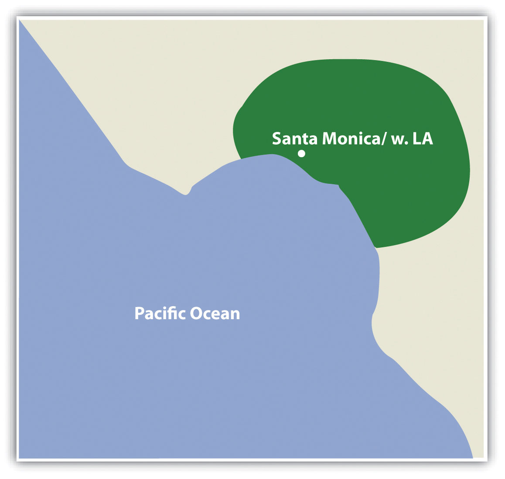
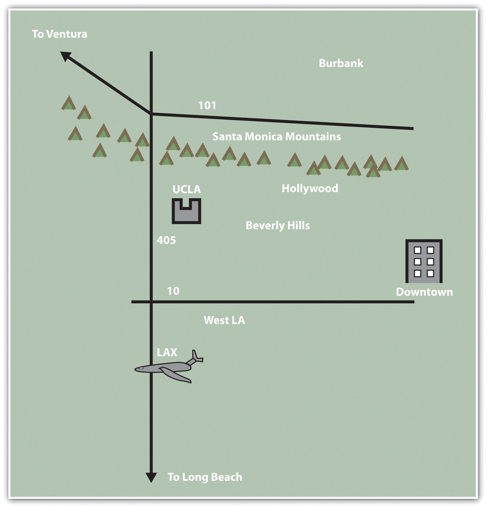
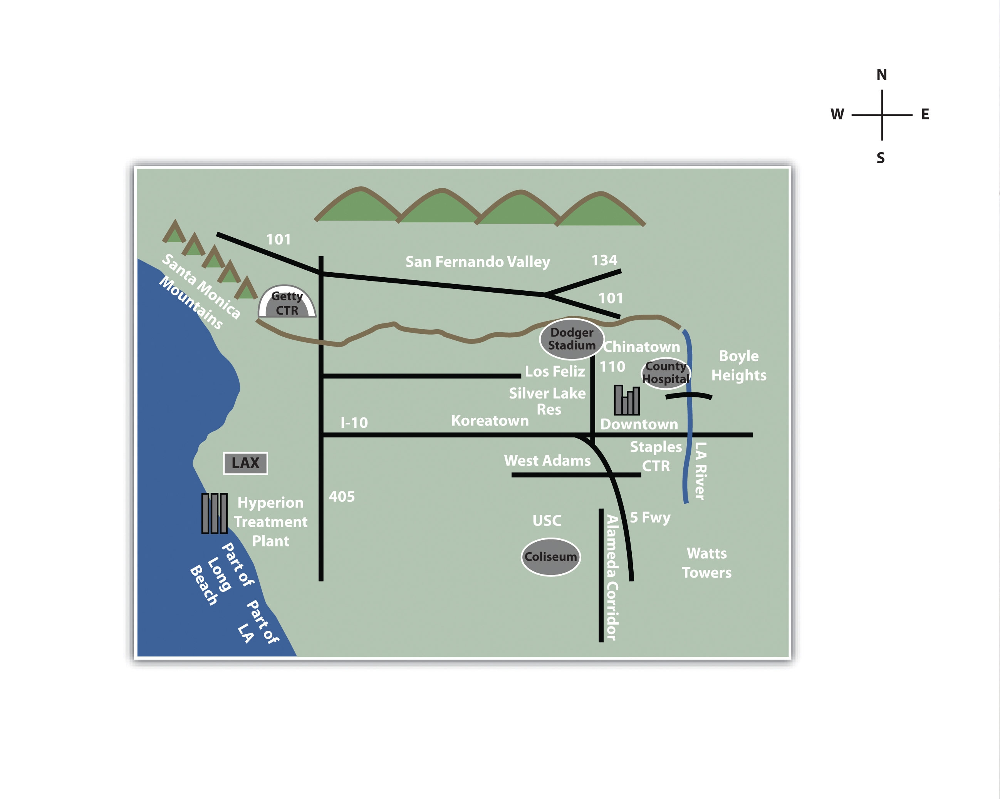

At no other time in the history of the world has it been easier to create or to acquire a map of nearly anything. Maps and mapping technology are literally and virtually everywhere. Though the modes and means of making and distributing maps have been revolutionized with recent advances in computing like the Internet, the art and science of map making date back centuries. This is because humans are inherently spatial organisms, and in order for us to live in the world, we must first somehow relate to it. Enter the mental map.
Mental or cognitive maps are psychological tools that we all use every day. As the name suggests, mental mapsMaps of the environment stored in our brains. are maps of our environment that are stored in our brain. We rely on our mental maps to get from one place to another, to plan our daily activities, or to understand and situate events that we hear about from our friends, family, or the news. Mental maps also reflect the amount and extent of geographic knowledge and spatial awareness that we possess. To illustrate this point, pretend that a friend is visiting you from out of town for the first time. Using a blank sheet of paper, take five to ten minutes to draw a map from memory of your hometown that will help your friend get around.
What did you choose to draw on your map? Is your house or where you work on the map? What about streets, restaurants, malls, museums, or other points of interest? How did you draw objects on your map? Did you use symbols, lines, and shapes? Are places labeled? Why did you choose to include certain places and features on your map but not others? What limitations did you encounter when making your map?
This simple exercise is instructive for several reasons. First, it illustrates what you know about where you live. Your simple map is a rough approximation of your local geographic knowledge and mental map. Second, it highlights the way in which you relate to your local environment. What you choose to include and exclude on your map provides insights about what places you think are important and how you move through your place or residence. Third, if we were to compare your mental map to someone else’s from the same place, certain similarities emerge that shed light upon how we as humans tend to think spatially and organize geographical information in our minds. Fourth, this exercise reveals something about your artistic, creative, and cartographic abilities. In this respect, not only are mental maps unique, but also the way in which such maps are drawn or represented on the page is unique too.
To reinforce these points, consider the series of mental maps of Los Angeles provided in Figure 1.1 "Mental Map of Los Angeles A".
Figure 1.1 Mental Map of Los Angeles A
Figure 1.2 Mental Map of Los Angeles B
Figure 1.3 Mental Map of Los Angeles C
Take a moment to look at each map and compare the maps with the following questions in mind:
Each map is probably an imperfect representation of one’s mental map, but we can see some similarities and differences that provide insights into how people relate to Los Angeles, maps, and more generally, the world. First, all maps are oriented so that north is up. Though only one of the maps contains a north arrow that explicitly informs viewers the geographic orientation of the map, we are accustomed to most maps having north at the top of the page. Second, all but the first map identify some prominent features and landmarks in the Los Angeles area. For instance, Los Angeles International Airport (LAX) appears on two of these maps, as do the Santa Monica Mountains. How the airport is represented or portrayed on the map, for instance, as text, an abbreviation, or symbol, also speaks to our experience using and understanding maps. Third, two of the maps depict a portion of the freeway network in Los Angeles, and one also highlights the Los Angeles River and Ballona Creek. In a city where the “car is king,” how can any map omit the freeways?
What you include and omit on your map, by choice or not, speaks volumes about your geographical knowledge and spatial awareness—or lack thereof. Recognizing and identifying what we do not know is an important part of learning. It is only when we identify the unknown that we are able to ask questions, collect information to answer those questions, develop knowledge through answers, and begin to understand the world where we live.
Filling in the gaps in our mental maps and, more generally, the gaps in our geographic knowledge requires us to ask questions about the world where we live and how we relate to it. Such questions can be simple with a local focus (e.g., “Which way is the nearest hospital?”) or more complex with a more global perspective (e.g., “How is urbanization impacting biodiversity hotspots around the world?”). The thread that unifies such questions is geography. For instance, the question of “where?” is an essential part of the questions “Where is the nearest hospital?” and “Where are the biodiversity hotspots in relation to cities?” Being able to articulate questions clearly and to break them into manageable pieces are very valuable skills when using and applying a geographic information system (GIS).
Though there may be no such thing as a “dumb” question, some questions are indeed better than others. Learning how to ask the right question takes practice and is often more difficult than finding the answer itself. However, when we ask the right question, problems are more easily solved and our understanding of the world is improved. There are five general types of geographic questions that we can ask and that GIS can help us to answer. Each type of question is listed here and is also followed by a few examples (Nyerges 1991).Nyerges, T. 1991. “Analytical Map Use.” Cartography and Geographic Information Systems (formerly The American Cartographer) 18: 11–22.
Questions about geographic locationThe position of a phenomenon on the surface of the earth.:
Questions about geographic distributionDescribes how phenonmena are spread across the surface of the earth.:
Questions about geographic associationRefers to how things are related to each other in space.:
Questions about geographic interactionDescribes the linkages and relationships bewteen places.:
Questions about geographic changeRefers to the persistence, transformation, or disappearance of phenomena on the earth.:
These and related geographic questions are frequently asked by people from various areas of expertise, industries, and professions. For instance, urban planners, traffic engineers, and demographers may be interested in understanding the commuting patterns between cities and suburbs (geographic interaction). Biologists and botanists may be curious about why one animal or plant species flourishes in one place and not another (geographic location/distribution). Epidemiologists and public health officials are certainly interested in where disease outbreaks occur and how, why, and where they spread (geographic change/interaction/location).
A GIS can assist in answering all these questions and many more. Furthermore, a GIS often opens up additional avenues of inquiry when searching for answers to geographic questions. Herein is one of the greatest strengths of the GIS. While a GIS can be used to answer specific questions or to solve particular problems, it often unearths even more interesting questions and presents more problems to be solved in the future.